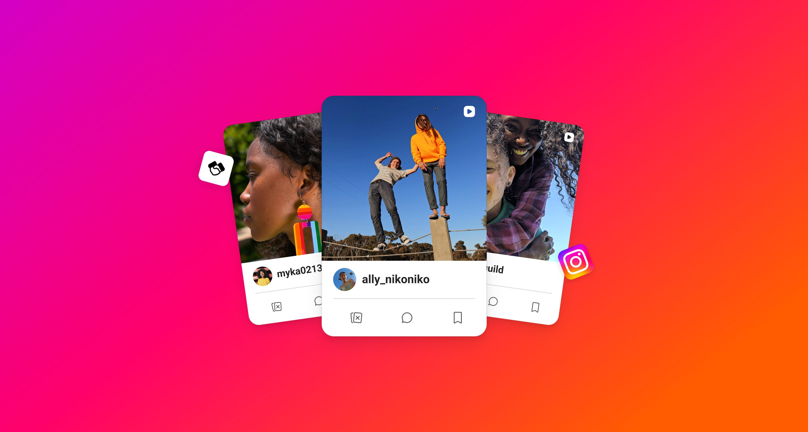

ML-Driven Creator Recommendations
I turned a creator-first directory into a content-first, ML-ranked matching surface for partnership ads, one of Instagram’s highest-impact formats.
The brand-side recommendation surface end to end: hierarchy, the creator card, the query model, and the feedback controls that trained ranking.
Brands were already judging creators through content. Rank on ad performance signal, and lead with the content itself.
Free-text AI search: approved by leadership, then sequenced out of phase 1 by me.

Instagram's creator marketplace allows brands to discover creators and their content.


Brands were evaluating creators on the wrong unit.
Cost to brands
Brands judged on content while the surface ranked on follower count. 77% of searches returned no matches, and they spent up to 1.5 months sourcing through third-party platforms.

Cost to creators
Follower count was what got you seen. Creators whose content was authentic and aligned with a brand’s values, but whose following was mid-sized, rarely surfaced.

Follower count wasn’t the villain. It still matters, and it carried through into the redesign. The problem was its rank in the hierarchy.
Meta could infer which content would carry an ad. That had never been modeled.
Partnership ads had performance data but only for content that was already an ad. Whether a creator’s organic post would perform as an ad was still unknown. I proposed using those proven signals to predict which organic content had the strongest potential as an ad, giving the marketplace a new way to match brands with creators and fueling its pivot to partnership ads, Instagram’s fastest-growing format.

I built the mandate, then narrowed the work to three shifts.
I found an ML engineer in another org with promising insights from a recent APAC experiment and connected them with my engineering team. The initiative had a technical path before it had a mandate. I made the case for content-led matchmaking at a product strategy session, winning leadership buy-in and a P0 on the H2 roadmap. From there, I led cross-functional ideation across 80+ concepts, prototyped the strongest ideas, and narrowed them to three strategic shifts for the first phase.
Content-first
Lead with the creator’s work, not their popularity. Stats support the judgment instead of standing in for it.
This creator has partnered with 3 brands similar to yours.
40K followers • 32K accounts engaged
Free-text AI search
Reduce the cognitive load and allow brands to describe what content they’re looking for in plain language.
Trained by use
Every brand action is a training signal. The surface gets more accurate by being used, not by being re-specced.
Closing the personalization loop.
I designed the end-to-end discovery experience: the content-first surface, the signals it ranked on, and the “Not Interested” feedback loop. I partnered with ML and Data Science, who built the model that powered it. That loop turned every dismissal into a training signal, continuously improving recommendations.

Visuals recreated to respect Meta confidentiality.
Four decisions, and what I cut to get to them.
Grid vs. List
Product initially pushed for a list view. I steered the direction toward a grid of cards, because cards could lead with the work itself while rows naturally prioritized stats. Brands weren’t comparing numbers. They were evaluating creative fit.


Creator card
A brand should reach a yes-or-no decision in about two seconds, and the grid should hold together as it scales. I evaluated four variants against four criteria: content reads first, the card explains why, height stays uniform, and each tile supports one decision.


AI search
A free-text AI search was the most direct path to intent-driven discovery, and leadership was ready to back it. I chose not to ship it. Given the implementation complexity and limited behavioral data available at launch, weak results could have undermined confidence in the entire recommendation experience. I sequenced it for Phase 2, when real usage data could make the model meaningfully better.


Feedback Loop
Rather than add a rating widget brands wouldn’t use, I turned the actions they already take into training signals weighted by intent. Messaging a creator signals the strongest intent; Save and Show More inform feed ranking; Not Interested provides the clearest corrective signal.

This creator has partnered with 3 brands similar to yours.
9K followers • 8K accounts engaged

This creator has posted about your brand before.
6K followers • 5K accounts engaged

This creator’s engagement rate is higher than similar creators.
5K followers • 4K accounts engaged

This creator has partnered with 5 brands similar to yours.
4K followers • 3K accounts engaged

This creator has produced content for your brand.
3K followers • 2K accounts engaged

This creator’s audience closely matches your target market.
5K followers • 3K accounts engaged
Designing for a model that is sometimes wrong.
The happy path was the easy half. A ranked surface has to stay credible when the model is wrong, which meant designing for three failure states before the default one.
Thin signal
A niche brief with few strong matches. The surface says so and narrows the set rather than padding it out to fill a grid.
A wrong recommendation
Dismissal has to be one action, visibly change the next set, and never feel like it cost the brand anything to correct.
The creator who never surfaces
Ranking on ad performance means some eligible creators sit below the fold indefinitely. Worth naming: it’s the cost of the bet, not a bug in it.
What shipped, what moved, and what I can claim.
Messages sent
Brand-to-creator outreach against the surface this replaced, the action closest to an actual partnership.
Partnerships formed
Completed partnerships versus the prior discovery surface’s baseline.
Growth rate
Adoption growing roughly five times faster than the marketplace’s other surfaces.
Alpha cohort, small n. Ranking and eligibility were partner-owned; I owned the surface and the controls that fed it. Treat these as the result of that pairing.
“The new recommendations surface was rated extremely intuitive, with zero functionality issues. 100% of partners said the ability to narrow down and inform creator recommendations would increase the value they experience with the product.”
Alpha testing · n=10 brand partners
A creator can meet every criterion and still make content that doesn’t resonate.
Partnership ads eligibility was the input I trusted most, and it is a floor, not a prediction. Brands rejected creators who passed every check because the work simply wasn’t for them. Balancing eligibility against taste is the part I would design first if I started again, and the part that decided whether the surface felt smart or generic.
Also, in order
One piece of content isn’t enough to decide on. I optimized for the two-second scan and under-served the second look.
And
Brands wanted control (sort, filter, search), not to sit and receive recommendations they could only mark “not interested.” I read the passive model as simpler; they read it as less agency.